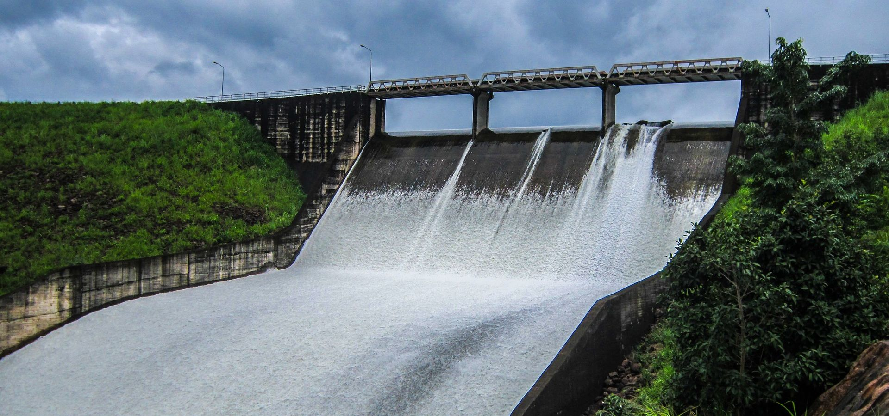
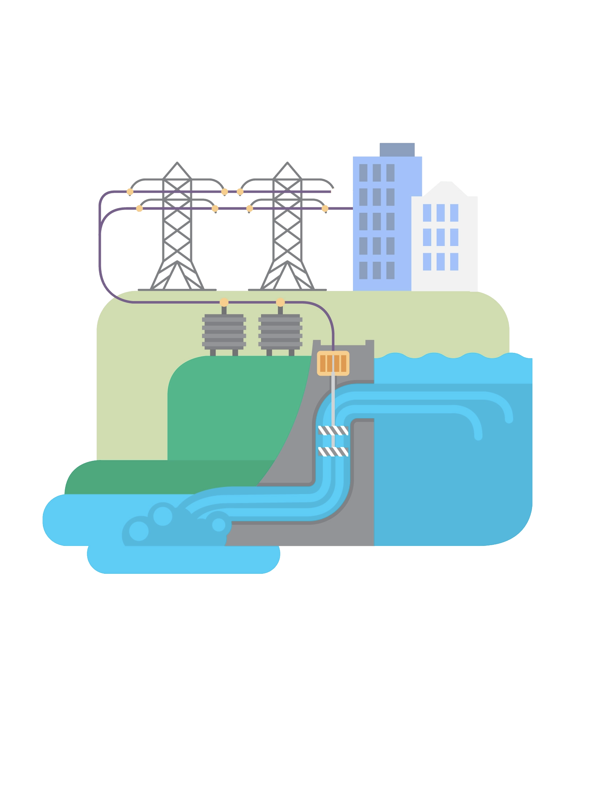
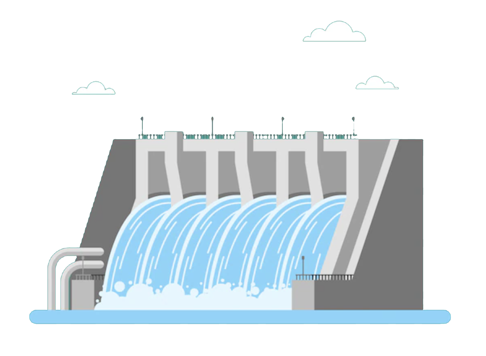
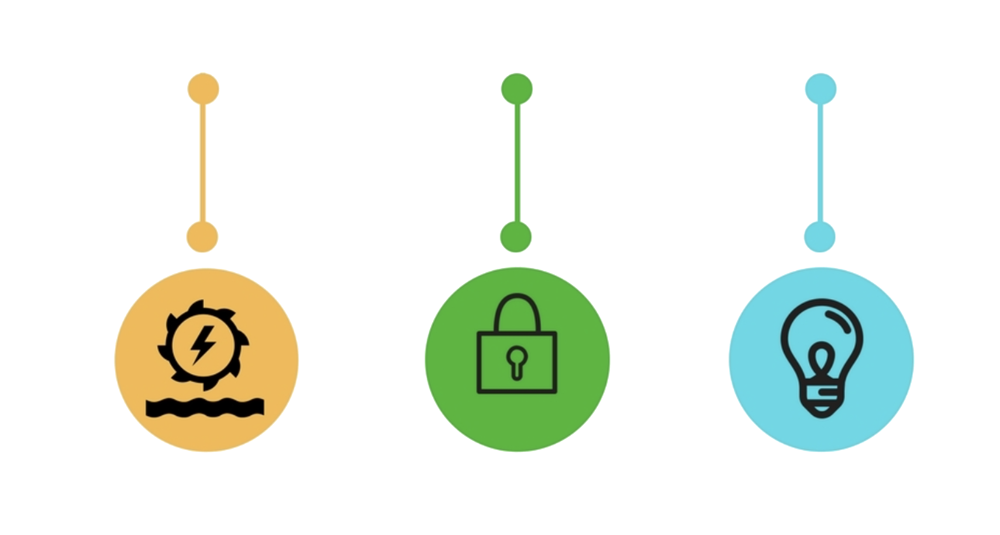
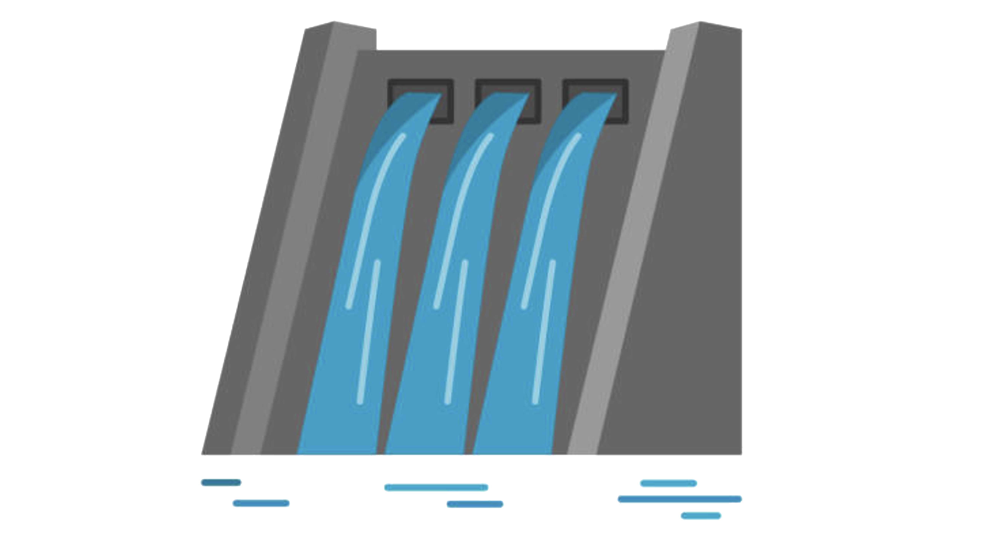

World water day
World Water Day is held annually on 22 March as a means of focusing attention on the importance
of freshwater and advocating form the sustainable management of freshwater
resources.
Days
Hours
Minutes
Seconds
WHAT IS HYDROPOWER?

Hydropower, or hydroelectric power, is one of the oldest and largest
sources of renewable energy, which uses the natural flow of moving
water to generate electricity. Hydropower currently accounts for 37%
of total U.S. renewable electricity generation and about 7% of total
U.S. electricity generation.
HOW DOES HYDROPOWER WORK?

Hydropower technologies generate power by using the elevation difference,
created by a dam or diversion structure, of water flowing in on one side and
out, far below, on the other. Department of Energy's "Hydropower 101" video
explains how hydropower works and highlights some of the research and
development efforts of the Water PowerTechnologies Office (WPTO) in this area.
WHAT IS THE COST OF HYDROPOWER?

Hydropower is an affordable source of electricity that costs less than most.
Since hydropower relies only on the energy from moving water, states that get
the majority of their electricity from hydropower, like Idaho, Washington, and
Oregon, have lower energy bills than the rest of the country.
Compared to other electricity sources, hydropower also has relatively low costs throughout the duration of a full project lifetime in terms of maintenance, operations, and fuel . Like any major energy source, significant upfront costs are unavoidable, but hydropower’s longer lifespan spreads these costs out over time. Additionally, the equipment used at hydropower facilities often operates for longer periods of time without needing replacements or repairs, saving money in the long term.
The installation costs for large hydropower facilities consist mostly of civil construction works (such as the building of the dams, tunnels, and other necessary infrastructure) and electromechanical equipment costs (electricity-generating machinery). Since hydropower is a site-specific technology, these costs can be minimized at the planning stage through proper selection of location and design.
Compared to other electricity sources, hydropower also has relatively low costs throughout the duration of a full project lifetime in terms of maintenance, operations, and fuel . Like any major energy source, significant upfront costs are unavoidable, but hydropower’s longer lifespan spreads these costs out over time. Additionally, the equipment used at hydropower facilities often operates for longer periods of time without needing replacements or repairs, saving money in the long term.
The installation costs for large hydropower facilities consist mostly of civil construction works (such as the building of the dams, tunnels, and other necessary infrastructure) and electromechanical equipment costs (electricity-generating machinery). Since hydropower is a site-specific technology, these costs can be minimized at the planning stage through proper selection of location and design.
WHAT ARE THE BENEFITS OF HYDROPOWER?

The benefits of hydropower have been recognized and harnessed for thousands of
years. In addition to being a clean and cost-effective form of energy,
hydropower plants can provide power to the grid immediately, serving as a
flexible and reliable form of backup power during major electricity outages
or disruptions. Hydropower also produces a number of benefits outside of
electricity generation, such as flood control, irrigation support, and water
supply.
WHAT IS THE HISTORY OF HYDROPOWER?

The history of hydropower dates back thousands of years. For example, the Greeks
used water wheels to grind wheat into flour more than 2,000 years ago. The evolution
of the modern hydropower turbine began in the mid-1700s when a French hydraulic and
military engineer, Bernard Forest de Bélidor, wrote Architecture Hydraulique.
Many key developments in hydropower technology occurred during the first half of the
19th century, and more recently, the past century has seen a number of hydroelectric
advancements that have helped hydropower become an integral part of the renewable
energy mix in the United States.